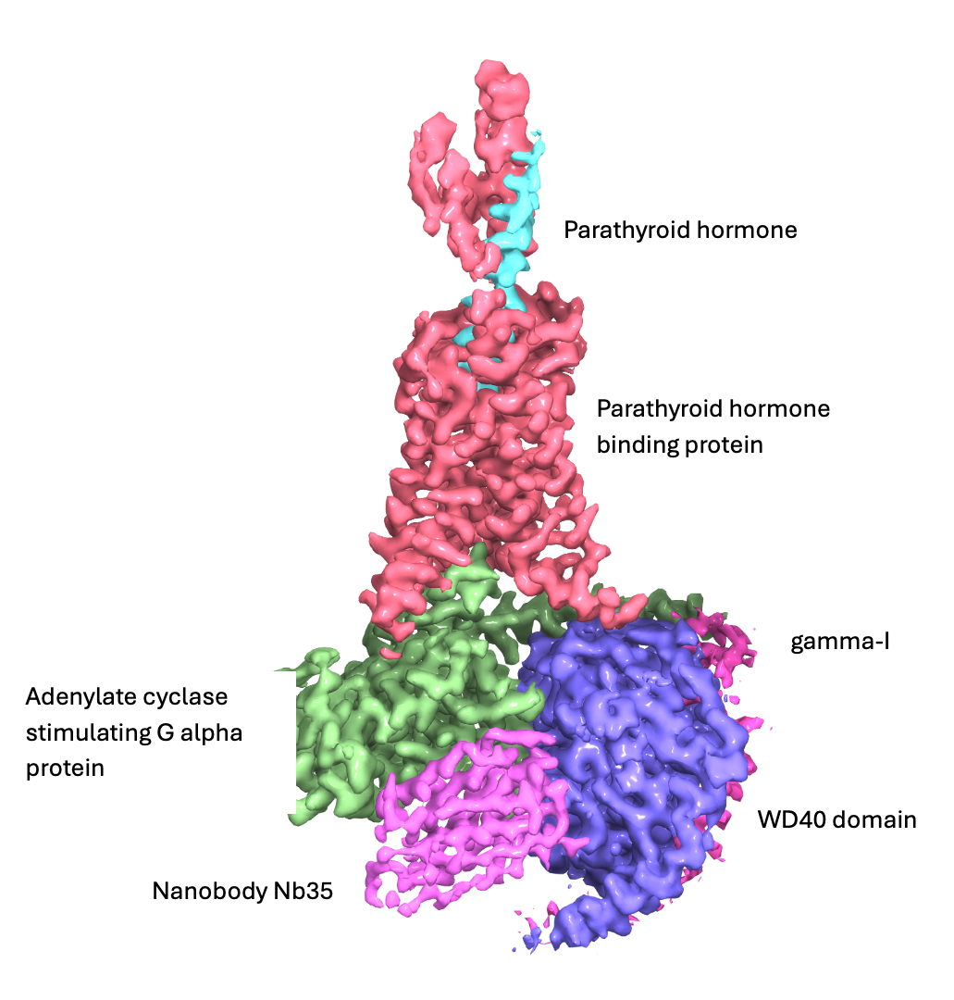
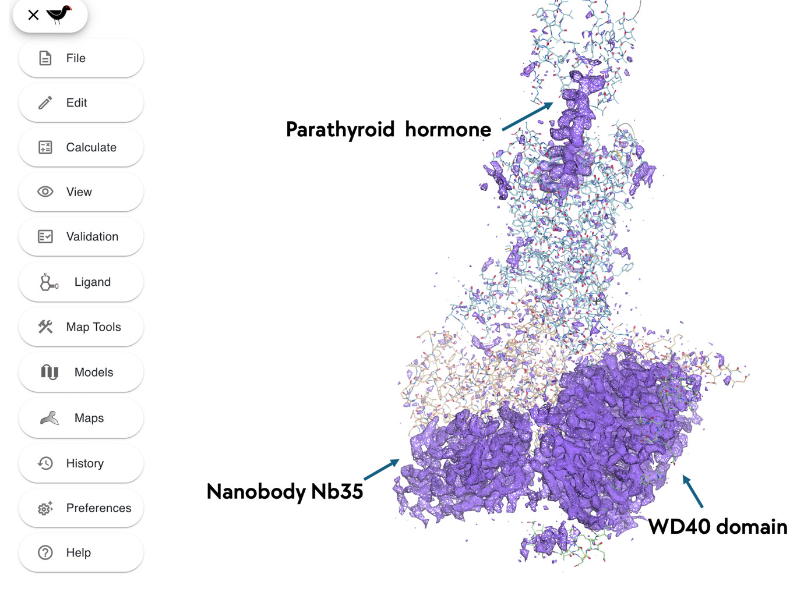
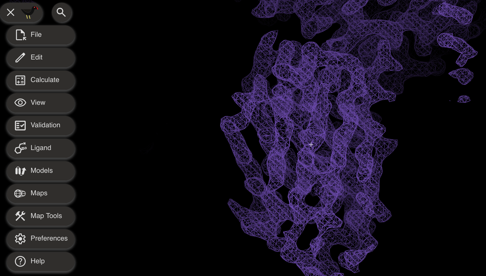
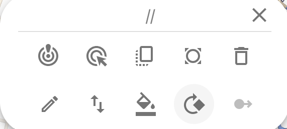
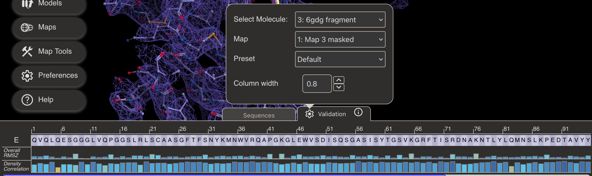
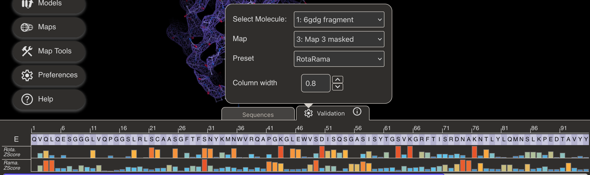
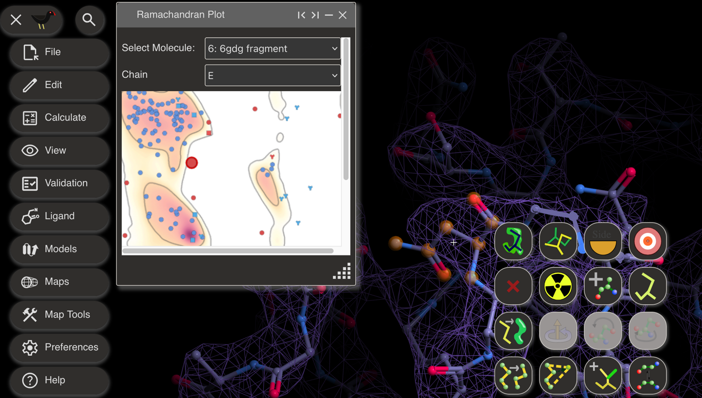
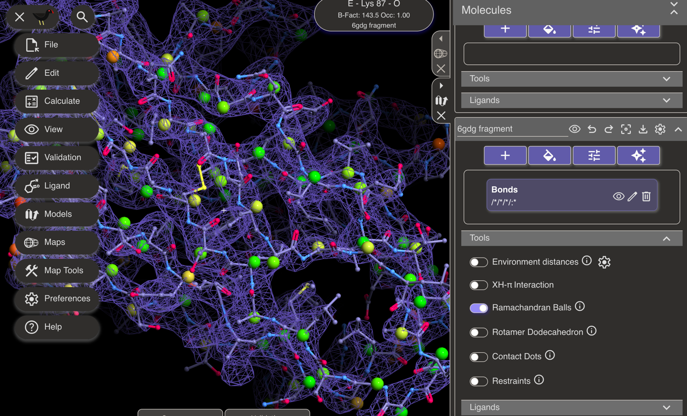
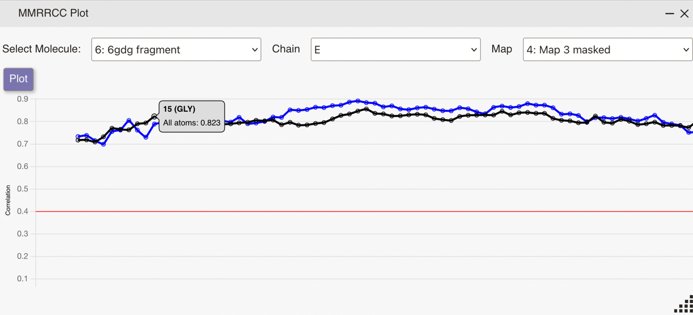

In this tutorial we will use Moorhen, the web version of Coot, to fit a nanobody into the cryo-EM map EMD-32143. We will take the nanobody from a known structure (molecular extraction), then refine and validate it with the tools available in Moorhen.

Getting Started: Load the Map and Model
To familiarise yourself with the basic navigation in Moorhen, see Getting Started.
- Open a web browser (Google Chrome is recommended) and go to moorhen.org
- File → Open Files → 32143-partial-model.pdb → Open
- File → Open Files → emd_32143.map → Open
In case you don’t have the data, download it here:
https://www2.mrc-lmb.cam.ac.uk/personal/pemsley/coot/files/32143-partial-model.pdb
https://ftp.ebi.ac.uk/pub/databases/emdb/structures/EMD-32143/map/emd_32143.map.gz
Blur and Resample the Map
Let’s draw the map as mesh and resample it:
- Maps → Draw Settings → Draw as mesh
- To change the contour level → CTRL scroll button
- Map Tools → Sharpen/Blur map
- “B-factor to apply” should be 40.0
- Turn on use resample and use the resample factor 1.4 → OK
A new map is generated: Map 1 blurred by 40
Note: If you can’t see the map, just click on the center on map icon, which is on the right side of the eye icon.
- Maps → Map 1 blurred by 40 → Draw settings → Draw as lit lines
You will see that this new map is easier to interpret.
- Delete the first map: Maps → click on the “Gear” icon of the panel for the first map and Delete Map.
- Undisplay the new map: click on the “Eye” icon.
Mask the Map
We are now only interested in the parts of the map for which we don’t currently have a model. So now mask the map using the (partial) model (the parts of the model that we have already fitted):
- Map Tools → Map masking… leave everything by default → OK
Now a new “masked map” is generated.
- Open the Maps window, go to the “masked map” and draw as mesh (or lit lines)
You should now see a map with three unmodelled parts:
- the hormone
- a WD40 domain
- a nanobody domain

Find the Nanobody
We have done a BLAST search for the sequence of our nanobody and know that the structure was published already in a different complex - it’s the “E” chain in the entry 6GDG. Let’s fetch that structure, extract the “E” chain and then fit it to our reconstruction.
Fetch the reference structure:
- File → Fetch from Online Services → 6gdg
Now make the fragment we need from that:
- Edit → Copy Fragment using CID
- Change “From molecule” to 6gdg
- Selection to Copy →
//E - OK
So now we have the “E” chain floating around in space…
Delete the 6gdg model - we don’t need it anymore:
- Models → click on the “Gear” icon of the 6gdg molecule and Delete molecule
Change the representation of the 6gdg fragment:
- Models → click on the pencil and change the style from Bonds to C-Alpha and Apply
Let’s find the centre of the nanobody domain:
- Maps → click on the “center on map” icon (close to the eye icon) of the masked map
- View → Other scene settings → show crosshair
Note: If you are using a white background, change it to black in View → scene settings.
Centre the view on the nanobody domain by “eyeballing” it and using middle-mouse click and drag. Rotate the view to check that you have found the approximate middle from various directions.
- If you zoom in and out, use the clipping front and back key bindings: 1 and 2, 3 and 4

Once you have found the centre of the nanobody:
- Edit → Move Molecule Here
- Select the molecule 6gdg fragment → OK
Jiggle-Fitting
Now to do the actual fitting:
- Calculate → Jiggle Fit with Fourier Filtering
- Choose molecule 6gdg fragment
- Change the map to Map masked
- Add an “Atom selection” as
//E - Change the number of trials to ~1000
Moorhen will think for a few seconds and then fit the nanobody into the density.
Refinement
Now set up the local distance restraints:
- Calculate → Generate Self Restraints
- Selection is “Molecule”
- Molecule is 6gdg fragment
- Max Dist → change to 5.1
Moorhen generates extra restraints (shown in grey lines).
Undisplay the extra restraints:
- Models → 6gdg fragment → Tools → unclick the “Restraints” representation.
Set the map weight:
- Maps → “Gear” icon of the masked map → set map weight
- ~3000 (it should be the default) → you can change it to 1800 → Set
To refine this domain/chain, we need to tell Moorhen which map to use for the refinement:
- Maps → click on the “○ Inactive” button of the masked map
Now define which atoms we want to refine (in this case, all of the nanobody):
- Edit → Create a selection
- Molecule is 6gdg fragment
- Atom Selection →
//(i.e. “all atoms”) - OK
You will see that the nanobody is now highlighted with green bonds and atoms. A dialog will appear at the middle top.

- Click on the “Refine” icon (top left)
Moorhen refines the nanobody
- Accept the modification
Now you will have green and purple lines for the restraints. Go back to Models and in Tools undisplay the restraints.
- Change the model representation from C-Alpha back to Bonds: Models → click on the pencil, change the style to Bonds and Apply
Validation
Sequence Validation Plot
Moorhen provides an array of validation data for every residue in the model.
- Click the Validation tab next to the Sequence tab.
- Click on the gear icon → Select molecule: 6gdg fragment
- Map → Map masked
- Wait
After a quick loading, you will see a series of coloured bars for each residue in the model (if it is stuck on “please wait”, close the window and open it again).

Technical note: Each row of the plot is a different validation score plotted per residue. The first line is an overall geometry-quality indicator; the second line is the density correlation for the residue, i.e. how well the model matches the map at that position. The scores are coloured so that problem residues stand out, and hovering a bar shows the underlying numbers.
Hovering a residue bar chart will show a tool tip with extended data for the residue.
- Click on a residue bar chart to centre the view on that residue.
- Click the i for more information about the validation data.
Let's change the default data:
- Click the gear icon to open the settings dialog.
- Change the preset from "Default" to "RotaRama".

The top line now shows the rotamer probability, and the bottom line shows the Ramachandran probability.
- Click on one of the orange bars for Q3 in Rama
- Right-click on the residue and a grid of functions will appear.
- Click on Flip Peptide (the second icon from the left): the peptide is flipped and the plot is updated.
- To refine, click on the “target” icon
Validation Menu
Let’s have a look at some outliers from a standard Ramachandran plot:
- Validation → Ramachandran Plot → select 6gdg fragment
- Click on the outlier (red spot) in the plot. Moorhen will put the residue at the centre of the screen
- Right-click on the residue and a grid of functions will appear.
- Click on Flip Peptide (the second icon from the left): the peptide is flipped and the Ramachandran plot is updated (the red spot disappears)
- To refine, click on the “target” icon

We can also enable Rama balls and/or Rota dodecahedron to have a look at the Ramachandran and rotamer probabilities of the entire model.
- Click on Models, or on the model tab if it is active
- Open the Tools panel and activate the Ramachandran Balls or Rotamer dodecahedron slider
Moorhen displays Ramachandran/rotamer markers that use colour to represent the percentile scores for that residue.

Now, let’s have a look at model-to-map agreement metrics:
The Q score for each residue is available from the Validation tab, by hovering the residue bars.
- Validation → MMRRCC plot
Technical note: The MMRRCC (Multi-Masked Residue Range Correlation Coefficient) plot provides another way of examining local model-to-map agreement. Rather than evaluating individual atoms or residues in isolation, MMRRCC calculates correlation between the atomic model and the experimental density over a series of overlapping residue ranges. The MMRRCC plot displays the correlation as a function of residue position along a chain, making it possible to identify stretches of the model that correlate well or poorly with the experimental map. Black line: all-atom correlation per residue. Blue line: side-chain correlation. Values below the red line indicate poorly modelled regions.

Merge
After refinement we should merge the nanobody into the main molecule.
- Edit → Merge Molecules
- “From molecule” is 6gdg fragment
- “Into molecule” is 32143-partial-model
- OK
Now save the combined model:
- Models → click on the “Download” icon of the 32143-partial-model
- You can also save a session file, where the data are embedded and which is easy to share: File → Save session file
Compare and contrast: the original model is 7vvl. Fetch the model and inspect the chain E.